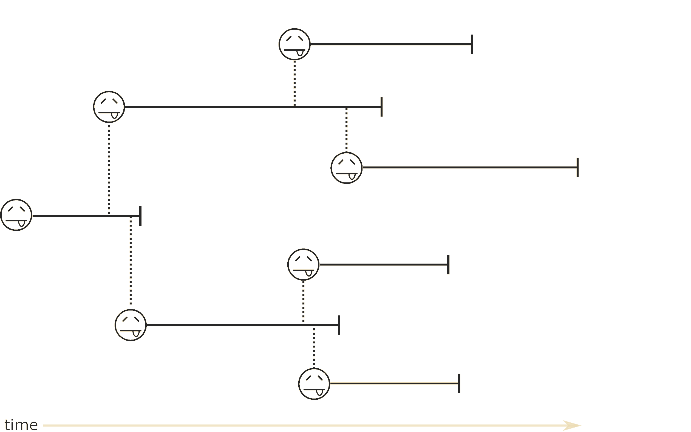
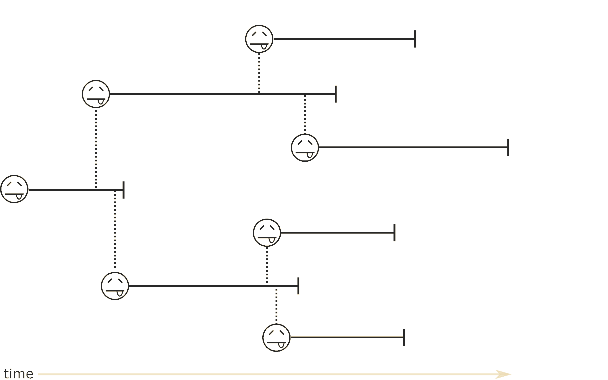
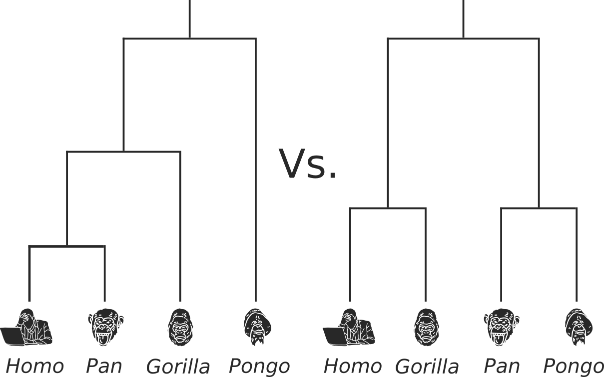
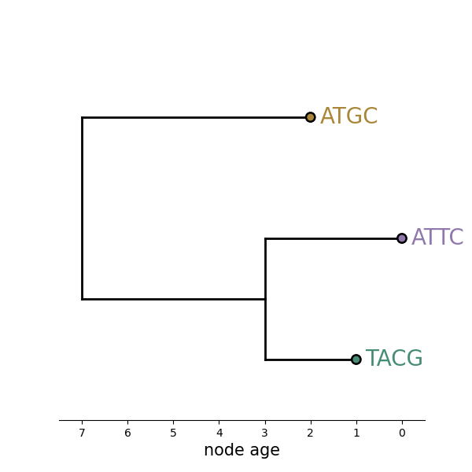
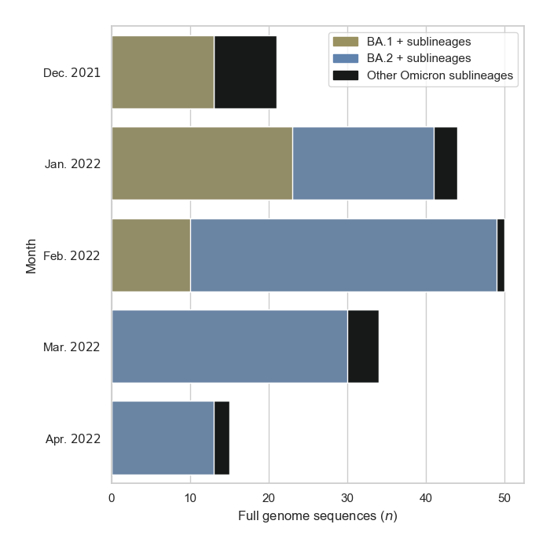
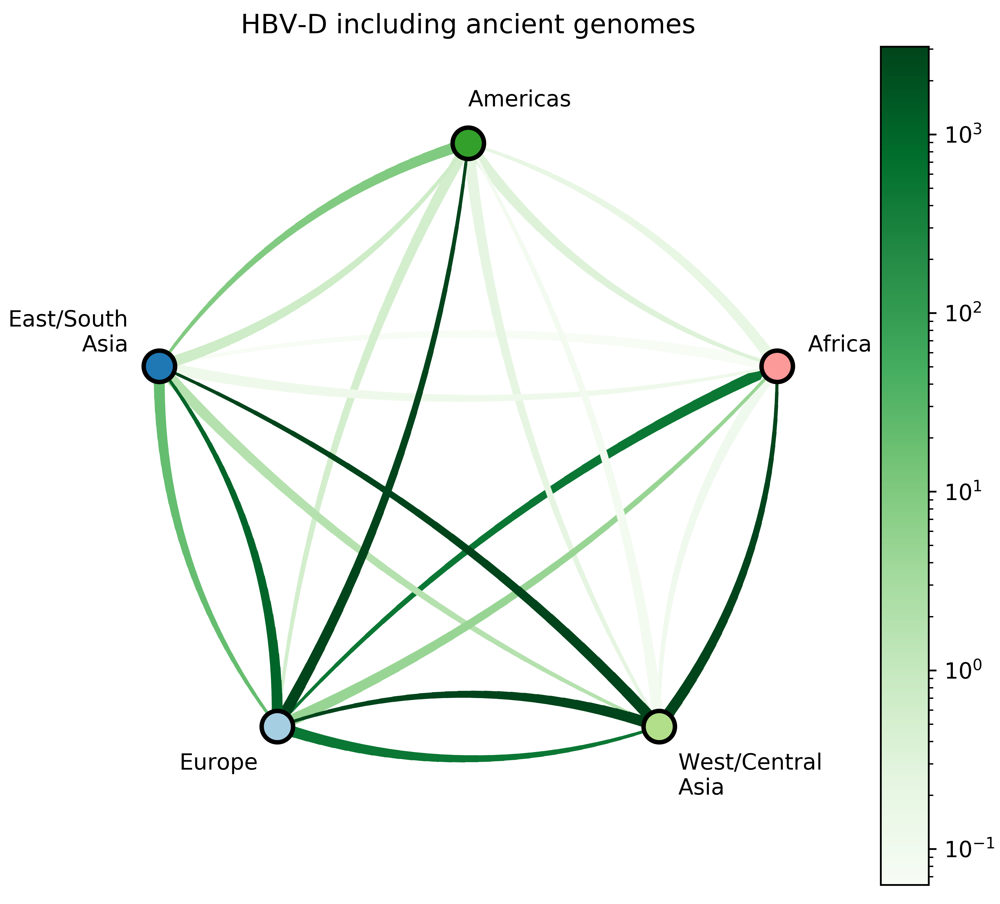

Phylodynamics and Genomic Epidemiology of Viral Pathogens
Barney Isaksen Potter
KU Leuven
2025-01-17
Doctoral Defense
PhD goal:
Use phylodynamic tools to characterize epidemics at various time-scales
- Real-time genomic epidemiology
- Post hoc phylodynamics
- Paleogenomic epidemiology
| virus | causes | spread through | genome | time in humans |
|---|---|---|---|---|
| SARS-CoV-2 | COVID-19 | exhaled droplets | large +ssRNA | since 2019 |
| HBV | hepatitis B | blood and bodily fluids | compact dsDNA | over ten thousand years |

Source: Morens & Fauci (2019)

 



What can this tell us?
- Topology
- Evolutionary rate
- Migration rates
- Migration history
- Population size

What can this tell us?
- Topology
- Evolutionary rate
- Migration rates
- Migration history
- Population size

What can this tell us?
- Topology
- Evolutionary rate
- Migration rates
- Migration history
- Population size

What can this tell us?
- Topology
- Evolutionary rate
- Migration rates
- Migration history
- Population size

What can this tell us?
- Topology
- Evolutionary rate
- Migration rates
- Migration history
- Population size


Which tree is better?


Tree likelihood: a value that quantifies how well a tree describes data under a given model.


Source: Stamatakis & Kozlov (2020)
Problem: parameter space size
\[\tiny \begin{array}{cc} Num.~taxa & Num.~topologies \\ \hline 1 & 1 \\ 2 & 1 \\ 3 & 3 \\ 4 & 15 \\ 5 & 105 \\ 6 & 945 \\ 7 & 10,395 \\ 8 & 135,135 \\ 9 & 2,027,025 \\ \vdots & \vdots \\ 769 & 3.753 \times 10^{2,110} \\ \end{array} \]Bayes' Theorem
\[ P(\theta|\textbf{X}) = \frac{P(\textbf{X} |\theta) \times P(\theta )}{P(\textbf{X})} \]The posterior probability of a phylogenetic tree, $\tau$:
\[ P(\tau|\textbf{X}) = \frac{P(\textbf{X} |\tau) \times P(\tau )}{P(\textbf{X})} \]
$\tau = $ phylogenetic hyopthesis (tree)
$\textbf{X} =$ genomic sequence data
Likelihood calculation
\[ P(\tau|\textbf{X}) = \frac{\begingroup \color{teal} P(\textbf{X} |\tau) \endgroup \times P(\tau )}{P(\textbf{X})} \] \[ \begingroup \color{teal} L(\tau,\nu,\Theta | x_1 \mathellipsis x_N) \endgroup = \prod_{i=1}^N Pr(x_i | \begingroup \color{darkmagenta} \tau \endgroup , \begingroup \color{darkblue} \nu \endgroup , \begingroup \color{mediumseagreen} \Theta \endgroup) \]
$\begingroup \color{darkmagenta} \tau = \text{tree topology} \endgroup, \begingroup \color{darkblue} \nu = \text{branch lengths} \endgroup, \atop \begingroup \color{mediumseagreen} \Theta = \text{model parameters} \endgroup, i \in \text{sites in genome}$
Prior calculation
\[ P(\tau|\textbf{X}) = \frac{P(\textbf{X} |\tau) \times \begingroup \color{chocolate} P(\tau ) \endgroup}{P(\textbf{X})} \] \[ \begingroup \color{chocolate} P(\tau) \endgroup = \frac{1}{\begingroup \color{crimson} B(s) \endgroup} \]
$\begingroup \color{crimson} B(s) = \text{number of possible topologies} \endgroup$
Marginal term calculation
\[ P(\tau|\textbf{X}) = \frac{P(\textbf{X} |\tau) \times P(\tau )}{\begingroup \color{goldenrod} P(\textbf{X}) \endgroup} \] \[ \begingroup \color{goldenrod} P(\textbf{X}) \endgroup = \sum_{j=1}^{\begingroup \color{crimson} B(s) \endgroup} P(\textbf{X} | \tau_j) \times P(\tau_j) \]
To calculate this we need to sum the density across every possible tree...
BA.1 in Pakistan
A recent epidemic withing a global pandemic
Driving questions
- How does a pathogen initially enter a country and influence local epidemics?
- How can we use phylodynamic methods to overcome global disparities in sequencing?
Data in this analysis
- 1690 global BA.1 genomes
- 63 from Pakistan
- 15 with travel-histories
- 32 discrete geographic areas
- Pakistan and neighboring countries
- Regions of China
- UN Georegions
- Roughly one third of Pakistan's fifth wave

Pakistan's Omicron epidemic




Key Takeaways
- BA.1 was the primary driver of the beginning of Pakistan's Omicron epidemic.
- Air traffic from Northern Europe caused most importations.
- Disparities in sequencing made analysis difficult and potentially biased.
Phylogeography of Hepatitis B Virus
A virus that has co-evolved with humans for millennia
This study
- 133 HBV positive individuals who have recently immigrated from sub-Saharan Africa
- 118 full genome sequences:
- 47 HBV-A;
- 7 HBV-D;
- 64 HBV-E.
- Supplemented with all available high quality GenBank HBV genomes

Source: Wikimedia Commons

Source: Kocher et al. (2021)
Estimating evolutionary rate from trees

Source: Mülemann et al. (2018)
Clock rate prior: $1.18 \times 10^{-5}$ [95% HPD: $8.04 \times 10^{-6} \textrm{--} 1.51 \times 10^{-5}$] subs./site/year
Source: Mülemann et al. (2018)
Driving questions
- How do human movement patterns shape viral spread?
- Do ancient genomes help us to infer the timing of events in the distant past?
Migration counts and support


Takeaways and next steps
- Large-scale human movements drives HBV globalization.
- More global genomic surveillance of HBV is necessary to understand the diversity and potential impact of each genotype.
- Find more mummies.
Overall conclusions
- (Bayesian) phylodynamics can help us understand both recent and ancient patterns of viral dispersal.
- Disparities in sequencing complicate the analysis of epidemics.
- We need more efficient ways to analyze increasingly large datasets.
ECV-KU Leuven
- Guy Baele
- Mandev Gill
- Philippe Lemey
- Samuel Hong
Fogarty International Center
- Nídia Sequeira Trovão
Vilnius University
- Gytis Dudas

Rega Institute
- Mahmoud Reza Pourkarim
- Marijn Thijssen
NIH Pakistan
- Massab Umair
- Zaira Rehman
- Aamer Ikram
- Muhammad Salman
Belgian American Education Foundation

Questions?
HBV-D


